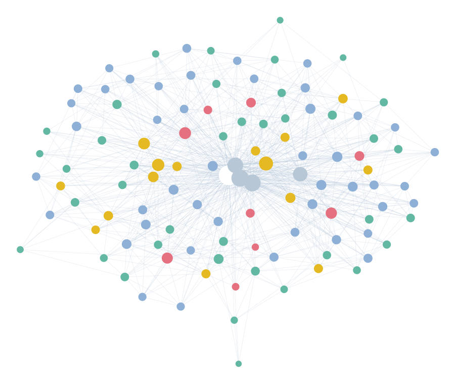
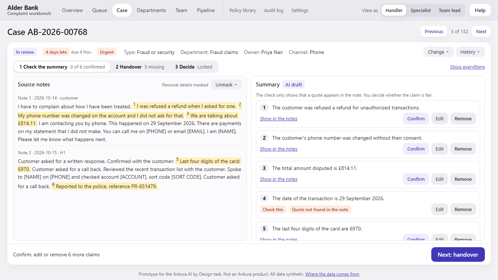
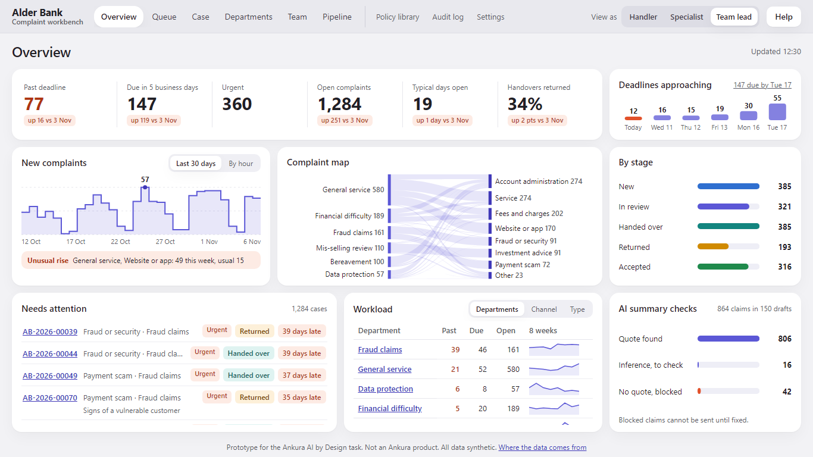
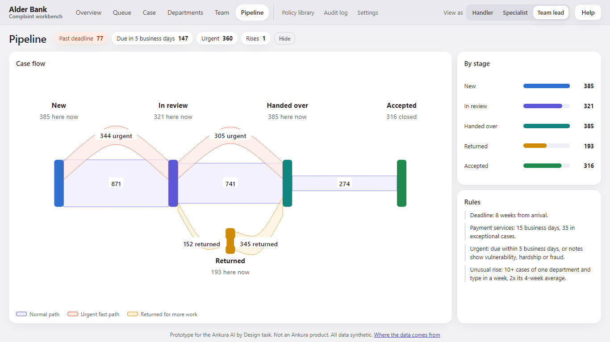
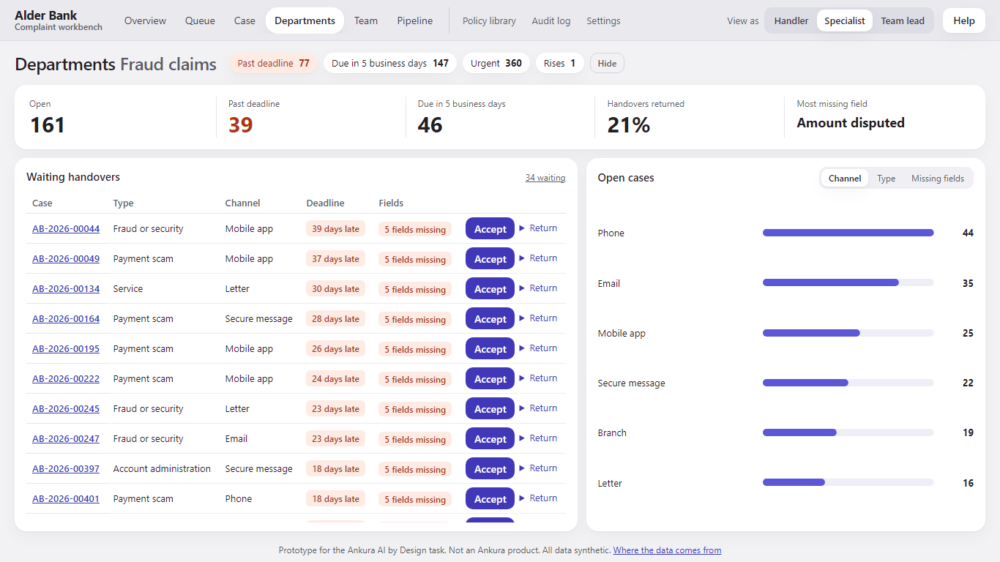

Before any code, the research went into an Obsidian vault: complaint rules, AI risks, UX evidence, each fact checked at its source. Because every note links to the evidence behind it, the AI agents could follow a decision straight to its source instead of re-reading everything.

The workbench routes each complaint, drafts a summary that quotes the customer's own words, and builds the handover. People keep every decision.
complaints to UK firms in H1 2026, each on an 8-week clock (FCA)
routed to the right team when the model is sure
clicks from the queue to an approved, checked handover
of cases the model is unsure of go straight to a person
Reads every note, retypes the handover.
Checks an AI summary claim by claim against its quotes.
Finds gaps, sends cases back.
Sees missing fields before accepting; a return needs a reason.
Chases deadlines case by case.
Sees the flow, the rises and the load, with no speed league table.

All data is synthetic, shaped by public FCA, ombudsman and UK Finance figures. Channel mix and time of day are our estimates; Settings lists every source.
A quote check proves the words exist, not that the summary is fair. Policy search finds the right clause 13 times in 20. The role switch is a demo, not a login.
A small local model with drafts recorded in advance: private and repeatable, not live. Classic models for routing: cheap, fast and explainable.
TF-IDF and logistic regression · BM25 search · a small Qwen model, run locally
Routing and search use classic methods; the model only drafts, and its drafts are checked.
Claude Code · Codex · a local Qwen model
Builder and reviewer agents worked from a written plan and a ledger, four builders in parallel at the peak, each on the cheapest model that could do the job.
Worked. Separate reviewers caught masking leaks, an audit gap and an accuracy figure that flattered itself (0.894 fell to 0.844).
Did not. Codex could not commit from its sandbox; an outage stopped every agent at once.


